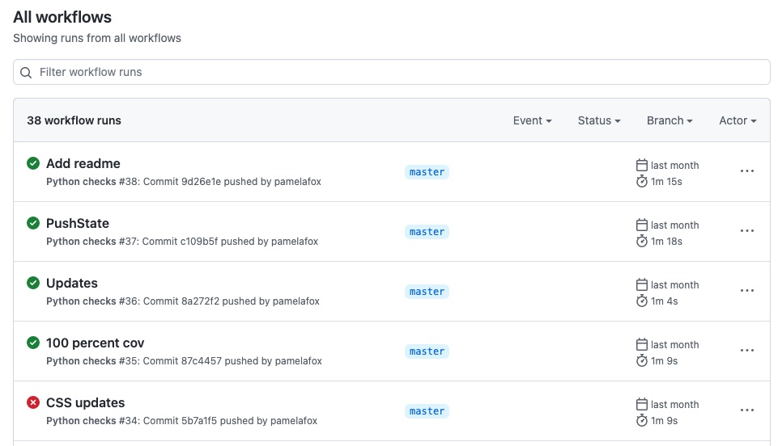

Testing
- Press O or Escape for overview mode.
- Visit this link for a nice printable version
- Press the copy icon on the upper right of code blocks to copy the code
Testing overview
Test types
- unit tests: checks small units (e.g. functions)
- integration tests: checks across parts of the program
- end-to-end tests: checks user flows through program
- manual testing: same, but not automated 😢
Testing pyramid

Testing philosophies
- Test-First Development (TFD): Write tests first, then write the code.
- Test-Driven Development (TDD): A much stricter version of TFD which involves the "red-green-refactor".
For most people, the philosophy is that "tests are good", since they give you more confidence in the correctness of your code. Their main drawback is the time required to write and run them.
Testing in Python
Python testing libraries
Some of the most common libraries used for testing:
- doctest: Built-in, has some limitations
- unittest: Built-in, more sophisticated
- pytest: Popular third-party library
- hypothesis: Property-based testing library
- selenium: Browser automation library
- playwright: (Headless) Browser automation library
doctests
Doctests mimic a Python console session and serve as a kind of documentation.
def sum_scores(scores):
""" Calculates total score based on list of scores.
>>> sum_scores([])
0
>>> sum_scores([8, 9, 7])
24
"""
total = 0
for score in scores:
total += score
return total
Each input/output pair is considered an "example".
Running doctests
Run all tests in a file:
python -m doctest -v examples/sum_scores.py
Run tests for a particular function:
import doctest
doctest.run_docstring_examples(sum_scores, globals(),
verbose=True, name="sum_scores")
Drawbacks of doctests
#1: Doctests don't always distinguish between
return values vs. print output:
def sum_scores(scores):
""" Calculates total score based on list of scores.
>>> sum_scores([])
0
>>> sum_scores([8, 9, 7])
24
"""
total = 0
for score in scores:
total += score
print(total)
#2: Doctests don't work well for integration tests since it's not clear where an integration test should live.
#3: Doctests take up a lot of space in the code.
unittest
The unittest module can be used to write large quantities of tests in files outside of the tested code.
import unittest
from sum_scores import sum_scores
class TestSumScores(unittest.TestCase):
def test_sum_empty(self):
self.assertEqual(sum_scores([]), 0)
def test_sum_numbers(self):
self.assertEqual(sum_scores([8, 9, 7]), 24)
Tests are methods inside a class that use a bunch of special assert* methods.
Running unittest tests
Run a single file:
python3 -m unittest test_sum_scores.py
Run all discoverable tests:
python3 -m unittest
For more options, read the docs.
pytest
The pytest package is a popular third-party alternative for writing tests.
from sum_scores import sum_scores
def test_sum_empty():
assert sum_scores([]) == 0
def test_sum_numbers():
assert sum_scores([8, 9, 7]) == 24
Tests are simple functions that use Python's assert statement.
Running pytest tests
Install the package:
pip3 install pytest
Run a single file:
python3 -m pytest sum_scores_test.py
Run all discoverable tests:
python3 -m pytest
pytest
Mocks & monkeypatches
If your function uses some functionality that is difficult to replicate in a test environment, you can monkeypatch that functionality.
This function uses input():
def input_number(message):
user_input = int(input(message))
return user_input
So we monkeypatch input() to mock the function:
def test_input_int(monkeypatch):
monkeypatch.setattr('builtins.input', lambda msg: '5')
assert input_number('Enter num') == 5
Coverage
Test coverage
Test coverage measures the percentage of code that is covered by the tests in a test suite.
Two ways of measuring coverage:
- Line coverage: Whether a line of code was executed
- Branch coverage: Whether a possible code path was followed (i.e. in
ifconditions)
coverage.py
coverage.py is the most popular tool for measuring coverage in Python programs.
Example coverage report for a Python web app:
tests/test_routes.py ................. [ 89%]
tests/test_translations.py .. [100%]
---------- coverage: platform linux, python 3.9.13-final-0 -----------
Name Stmts Miss Cover Missing
----------------------------------------------------------
src/__init__.py 17 0 100%
src/database.py 4 0 100%
src/models.py 20 0 100%
src/routes.py 74 0 100%
src/translations.py 14 0 100%
tests/conftest.py 35 0 100%
tests/test_routes.py 110 0 100%
tests/test_translations.py 16 0 100%
----------------------------------------------------------
TOTAL 290 0 100%
Running coverage.py
Install the package:
pip3 install coverage
Run with unittest:
coverage run -m unittest test_sum_scores.py
Run with pytest:
coverage run -m pytest sum_scores_test.py
You can also run with branch coverage.
View coverage report
For a command-line report:
coverage report
For an HTML report:
coverage html
Other reporter types are also available.
Testing workflow
When to test?
- While developing new changes
- pre-commit: Before committing code to a repository.
- Before merging code into the main branch.
- Before deploying code to production.
pre-commit
pre-commit is a third-party package for running pre-commit hooks.
Running all tests before a commit can take a long time, however!
Continuous integration (CI)
Whenever code is pushed to a repo, a CI server can run a suite of actions which can result in success or failure. Actions commonly include linting, testing, and coverage.
Popular CI options: Jenkins, TravisCI, CircleCI, Github actions
Github actions
An example Github actions workflow with pytest:
name: Python checks
on: [push, pull_request]
jobs:
build:
runs-on: ubuntu-latest
steps:
- uses: actions/checkout@v3
- name: Set up Python 3
uses: actions/setup-python@v3
with:
python-version: 3.11
- name: Install dependencies
run: |
python -m pip install --upgrade pip
pip install pytest
- name: Run unit tests
run: |
pytest
See it in action.